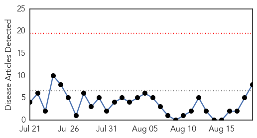
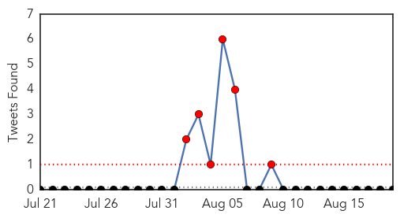
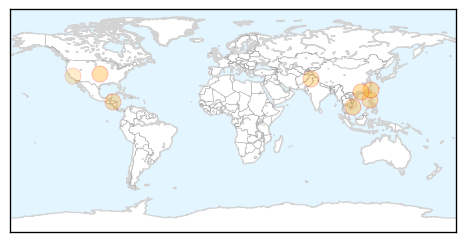
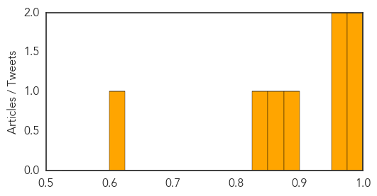

Dengue Fever
30-Day Web Trend
0 alerts, 0 warnings

30-Day Twitter Trend
7 alerts, 0 warnings

Article Locations
Article Confidences
Top Articles:
- 0.999
- Dengue Fever Spreads in Guangzhou in Southern China
- 0.991
- 1st dengue death reported in Kaohsiung, public urged to take precautions: CDC
- 0.965
- Dengue fever on the rise in Vietnam
- 0.960
- Dengue fever on the rise in Vietnam
- 0.882
- To Control Disease, a City Puts a Bounty on Rats’ Heads – Next City
- 0.873
- Fumigation done to protect cops from dengue fever, malaria
- 0.837
- How Severe Is This Humanitarian And Medical Issue?
- 0.625
- Mosquito district asking residents to report bites
Top Tweets:
-
No tweets found for Aug 19, 2014
Pertussis
30-Day Web Trend
1 alerts, 0 warnings

30-Day Twitter Trend
0 alerts, 0 warnings

Article Locations

Article Confidences

Top Articles:
-
No articles found for Aug 19, 2014
Top Tweets:
-
No tweets found for Aug 19, 2014